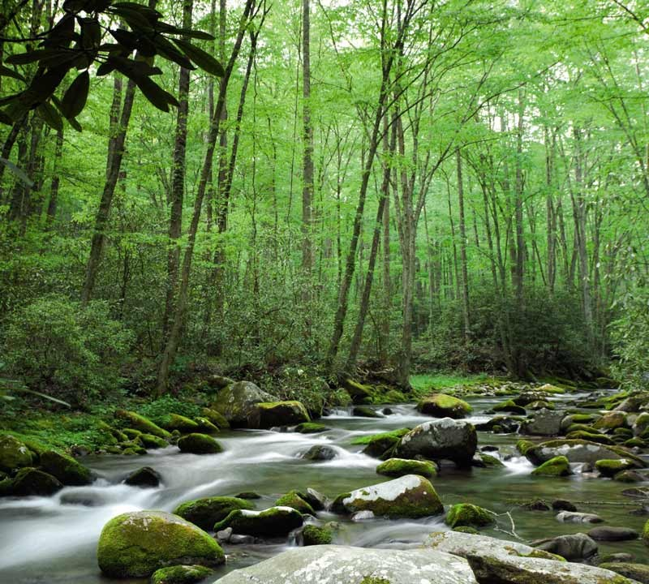

Forêt de Sherwood
La forêt de Sherwood est une forêt célèbre connue mondialement entourant le village d'Edwinstowe dans le Nottinghamshire, en Angleterre, historiquement associée à la légende de Robin des Bois, mais aussi à l'épopée des Luddites à l'ère industrielle. Les 423 ha de la forêt actuelle sont les vestiges du vaste domaine de chasse royal qui s'étendait à l'intérieur des comtés voisins. Un parc ouvert au public a été ouvert en 1969 par le conseil du comté de Nottinghamshire, qui administre la forêt. En 2002, la forêt de Sherwood, riche en chênes, bouleaux et fougères, a été désignée en tant que réserve nationale naturelle par l'English Nature.